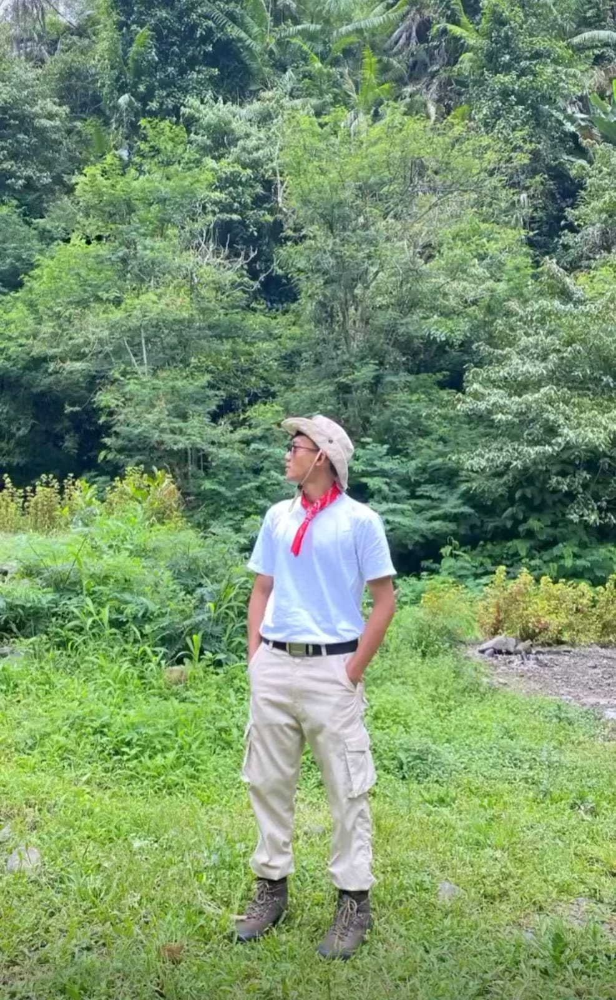

Assalamu'alaikum — Selamat Datang!
Laman resmi untuk kegiatan akademik, materi pembelajaran, hasil penelitian, serta pengabdian kepada masyarakat Universitas Kuningan: Mendampingi, Melayani, Memberikan yang Terbaik.
Tentang Saya
Saya adalah dosen tetap Program Studi Sistem Informasi, Fakultas Ilmu Komputer, Universitas Kuningan. Bergabung sejak 2009, mengajar mata kuliah di bidang Sistem Informasi, Pemrograman Web, serta meneliti penerapan Teknologi Informasi dibidang Pendidikan, UMKM, Kesehatan dan Perikanan.
Laman ini dibuat/ia secara mandiri dalam memudahkan akses informasi akademik bagi mahasiswa, rekan sejawat, serta masyarakat luas — mencerminkan semangat Universitas: Mendampingi, Melayani, Memberikan yang Terbaik.
Riwayat Pendidikan
- 2013 — Magister KomputerSTMIK Likmi
- 2006 — Sarjana KomputerUniversitas Kuningan
- 1998 — Sekolah Menengah Atas (IPS)SMAN 3 Kuningan
- 1995 — Sekolah Menengah PertamaMTs Negeri Ciamis
- 1992 — Sekolah DasarSD Negeri 2 Darma